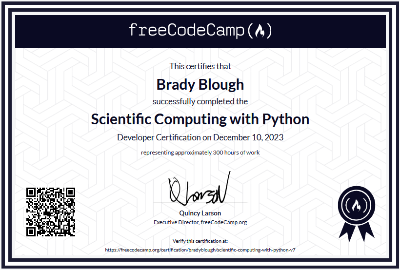

Certificates
I’m committed to continuous learning, particularly in space science and scientific software. Below are selected courses and certifications I’ve completed, including astronomy fundamentals, cosmology, and hands-on scientific computing with Python and NumPy.

Scientific Computing with Python | freeCodeCamp
Comprehensive certification covering Python fundamentals, data processing, numerical computation with NumPy, algorithmic problem solving, and scientific programming. Represents approximately 300 hours of hands-on coding work.

Astronomy: Exploring Time and Space | University of Arizona
Broad astronomy foundation covering observational methods, the scientific method, galaxies, stellar evolution, cosmology, and astrobiology.

From the Big Bang to Dark Energy | The University of Tokyo
Introductory cosmology course covering the evolution of the universe, inflation, dark matter, dark energy, and foundational particle physics concepts.

The Science of the Solar System | Caltech
Detailed study of solar system formation, planetary science, and comparative planetology, including the search for life beyond Earth.

AstroTech: Science and Technology Behind Astronomical Discovery | University of Edinburgh
Overview of the tools behind modern astronomy—telescopes, detectors, instrumentation, and how engineering choices shape scientific outcomes.

Data-driven Astronomy | The University of Sydney
Practical course focused on analyzing astronomical datasets using scientific Python tools (including NumPy), applying algorithms to extract insights, and introducing machine learning concepts for astronomy workflows.